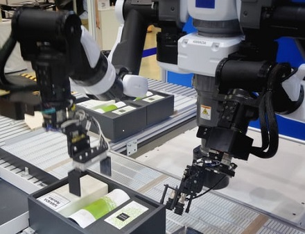

New
Artificial Intelligence
Artificial Intelligence, sometimes called Machine Intelligence, is intelligence demonstrated by machines, unlike the natural intelligence displayed by humans and animals.
Any device that perceives its environment and takes actions that maximixe its chance of successfully achieving its goals are called 'Intelligent Agents.'
Travel . Events
June 24, 2020
36 comments
by Admin Nat
New
Robotics
Robotics is an interdisciplinary research area at the interface of computer science and engineering. Robotics involve design, operation, and use of robots. the goal of robotics is to design intelligent machines that can help and assist humans in their day-to-day lives
and keep everyone safe. Robotics draws on the achievement of information engineering, computer engineering, mechanical engineering, electronic engineering and others.
Creative . Design . Business
June 16, 2020
48 comments
by Admin Sam

Machine Learning
Machine Learning is a subset of AI. With machine learning, computers are programmed to learn to do something they are not programmed to do. They learn by discovering patterns and insights from data. In general, we have two types of learning, supervised and unsupervised.
Machine learning is rapidly being deployed in all kinds of industries, creating a huge demand for skilled professionals. the machine learning is expected to grow to $8.81 billion by 2022.
Music . Audio
June 11, 2020
24 comments
by John Walker
Edge Computing
Edge Computing, Formarly a technology trend to watch, cloud computing has become mainstream, with major players AWS(Amazon Web Services), Microsoft Azure and Google Cloud dominating the market. the adoption of cloud computing is
still growing, as more and more businesses migrate to a cloud solution. But it's no longer the emerging technology. By 2022, the global edge computing market is expected to reach $6.72 billion.
Artworks . Design
June 4, 2020
72 comments
by Admin Sam
Cybersecurity
Cybersecurity might not seem like emerging technology, given that it has been around for a while, but it is evolving just as other technolofies are. That's in part because threats are conctantly new. The malevolent hackers who are trying to illegally access data are not going to give up any time soon. The number of cybersecurity jobs is growing three times faster than other tech jobs. As a result, it's predicted that we will have 3.5 million unfilled cybersecurity jobs by 2021.
Title #099 New #0CC
Text #999 Line #CCC Next #0CC Prev #F0F0F0
Creative . Video . Audio
May 31, 2020
84 comments
by Admin Sam
Internet of Things(IoT)
Many "things" are now being built with WiFi connectivity, meaning they can be connected to the internet-and to each other. Hence, the Internet of Things, or IoT. The Internet of Things is the future and has already enabled devices, home appliances, cars, and much more to be connected to and exchange data over the internet. And we're only in the beginning stages of IoT. The number of IoT devices reached 8.4 billion in 2017is expected to reach 30 billion in 2020.
Visual . Artworks
June 16, 2020
96 comments
by Admin Sam